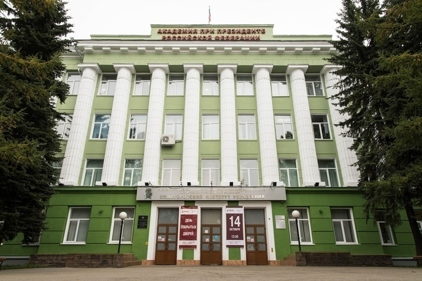

Заголовок абзаца 1
Термоядерное взрывное устройство может быть построено как с использованием жидкого дейтерия, так и газообразного сжатого. Но появление термоядерного оружия стало возможным только благодаря разновидности гидрида лития — дейтериду лития-6 (6Li 2H). Это соединение тяжёлого изотопа водорода — дейтерия и изотопа лития с массовым числом 6.
Заголовок абзаца 2
Термоядерное взрывное устройство может быть построено как с использованием жидкого дейтерия, так и газообразного сжатого. Но появление термоядерного оружия стало возможным только благодаря разновидности гидрида лития — дейтериду лития-6 (6Li 2H). Это соединение тяжёлого изотопа водорода — дейтерия и изотопа лития с массовым числом 6.
Рисунок

© Наумов Александр Евгеньевич